Top ten from fivethirtyeight.com through Spi ratings of teams and players:
- Brazil
- Spain
- Germany
- Portugal
- France
- Argentina
- Netherlands
- England
- Belgium
- Uruguay


 

Samuel Eto'o, retired professional footballer (Barcelon, Atlanta., etc.)
Cafu, retired professional footballer (AC Milan, etc.)
FIFA Ranking of World Cup 2022 countries top 20(6th Oct) [points]
- Brazil 1841
- Belgium 1816
- Argentina 1773
- France 1759
- England 1728
- Spain 1715
- Netherlands 1694
- Portugal 1676
- Denmark 1666
- Germany 1650
- Croatia 1645
- Mexico 1644
- Uruguay 1638
- Switzerland 1635
- USA 1627
- Senegal 1584
- Wales 1569
- Iran 1564
- Serbia 1563
- Morocco 1562
Potential winners
Argentina
Argentina are on prospect to win it all with the form they are having these past two years. Winning the Copa America 2021 finally against Brazil, and Winning the Finnalisma against Euro 2022 winners, Italy. They going into the tournament with a 36 unbeaten streak began early 2019. Messi is going on form into the tournament with 50 g/a this year already. Will Messi finally take it home after the heart breaking loss in 2014 World Cup final?
Brazil
As the most predicted country to win the World Cup, Brazil could take home their 6th World Cup for their Country. They are entering the tournament with super stars on the field and on the bench. Brazil's squad is stacked and matched like no other. From two amazing goalkeepers to several of the best forwards in the game right now. Will Brazil hold to their standards or flop and lose?
France
The current world champions are looking to snag their back to back win, and claim themselves among the greatest ever to play football. France in the 2018 World Cup won in a complete dominating fashion with Mbappe, Giroud, Dembele and Antoinne Griezmann displaying phenomenol football skill. Although the french squad have been riddled with injuries with 6 of their main starting line up injured. Notably, Ngolo Kante, key midfield player, and Karim Benzema current best player in the world with the Ballon d'or. Do France have what it takes to show their skills and triumph yet again?
England
Second place of the Euro 2022 competition, you cannot count them out. Every year it is the same story with the English fans across the world, "it's coming home", but on the big stages they start well always but get knocked out early on the in the playoffs. Will this year be different? England are going into the tournament with debatably their best team ever. Every year England lacked some aspect in their squad and gameplay whether it be defensive or attacking, but this year they got super star players in every position and with surplus of brilliant players to substitute from. As one of the youngest teams entering the tournaments, Can the youngsters fight till the end for their country and take it home?